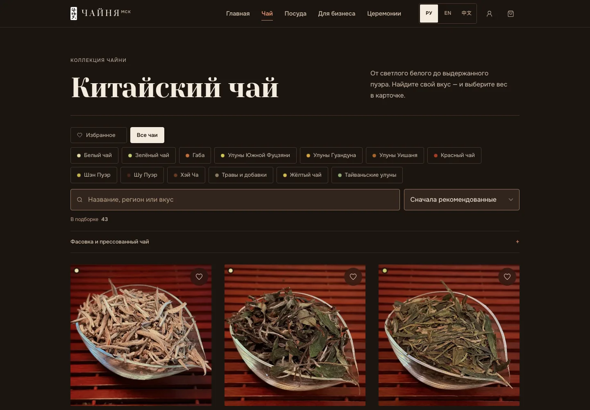
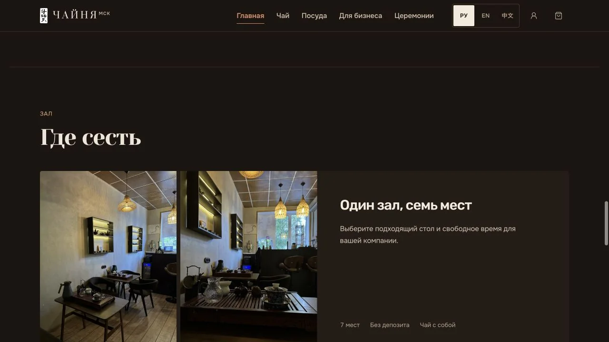
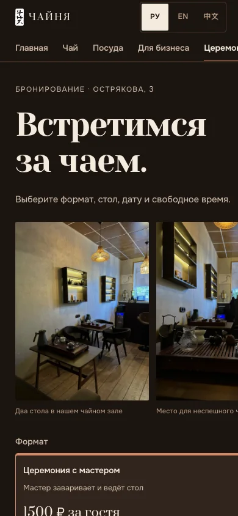
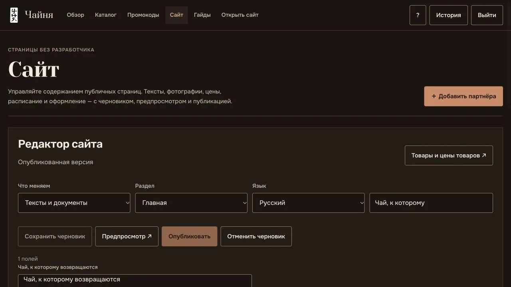

Рабочие пользовательские маршруты доступны на chainya.ru на трёх языках.
E-commerce · локальный бизнес · Москва
Чайня — цифровая система чайной
Мы связали атмосферную витрину с ежедневной работой бизнеса: каталог чая и посуды, заказ, бронь двух столов или всего зала, кабинет гостя, обращения и панель владельца — на русском, английском и китайском.

сайт работает3языка публичного интерфейса: RU, EN и 中文
2 + залдва отдельных стола или бронирование всего пространства
602текстовых поля доступны владельцу в редакторе сайта
5последних опубликованных версий можно вернуть из панели
статус кейса
можно открыть сейчасЖивой коммерческий сайт
Релизные хэши, 32 публичные страницы и ресурса, 7 разделов панели и сценарии редактора сверены отдельно.
Кейс не заявляет рост продаж, а датированная проверка не имитировала реальные платежи, чеки или сообщения клиентам.
Один бренд — четыре причины прийти
Пользователь сразу попадает в свой сценарий, а не разбирается в длинной универсальной странице.

Розница
Выбрать чай домой
Каталог, поиск, фильтры, избранное, фасовки 10–100 г, штучные товары и корзина.

Офлайн
Забронировать стол или зал
Два стола, весь зал, формат церемонии, число гостей и свободные двухчасовые интервалы.

B2B
Обсудить поставку
Отдельная страница для кофеен, ресторанов и офисов с контекстной заявкой владельцу.

Сервисы
Церемонии и ремонт
Бронь в чайной, выездной формат и отдельная заявка на ремонт посуды с фотографией.
путь гостя и команды
От намерения гостя до заказа, брони или заявки
Четыре разных сценария начинают путь по-разному, но сходятся в проверенном сервером действии и понятном продолжении для гостя и команды чайной.
Гость выбирает свою цель
Купить чай, забронировать стол, заказать поставку или пригласить мастера можно из отдельных маршрутов.
Формируется конкретное намерение
Корзина собирает фасовки и товары, бронь — дату и время, B2B и церемонии — параметры заявки.
Сервер перепроверяет критичные данные
Для заказа — цены, наличие и состав; для брони — свободное окно без пересечения с другой заявкой.
Гость получает понятное продолжение
Заказ или бронь сохраняются в кабинете, а Telegram можно подключить для доступа к информации и уведомлениям.
Состав перепроверен
Сервер заново сверяет позиции, цены и наличие перед оформлением.
Время закреплено
Двухчасовое окно не пересекается с другой бронью.
Команда получает контекст
B2B и выездные церемонии не смешиваются с розничной корзиной.
Задача
Продать атмосферу, не потеряв удобство магазина
Чайня — камерное пространство, магазин и сервисный бизнес одновременно. Интерфейсу требовалось сохранить характер места, но не заставлять посетителя разбираться, где купить чай, как забронировать церемонию или куда отправить корпоративный запрос. Мы разделили намерения гостя, а владельцу собрали их в одном рабочем контуре.
Каталог и посуда не смешаны
Поиск, категории, сортировка, избранное, фасовки, наличие и отдельные карточки помогают выбрать товар без лишнего шага.
Заказ проверяет сервер
Перед оформлением система повторно сверяет цены, наличие и состав корзины; браузер не назначает критичные значения сам.
Бронь учитывает реальный зал
Два стола имеют разную вместимость, а бронь всего зала блокирует оба. Свободные интервалы рассчитывает сервер.
Кабинет связывает визиты
Гость видит свои заказы и брони, может присоединить гостевой заказ и подключить Telegram как дополнительный канал.
Интерфейс работающего сайта
Снимки работающего сайта без заказов и персональных данных. На широком экране показан каталог, на мобильном — бронирование.
Открыть сайт ↗
Ежедневная работа владельца
Менять сайт без разработчика
Панель объединяет публичный контент и операционные разделы. Владелец может подготовить черновик, открыть закрытый предпросмотр, опубликовать изменения и вернуть одну из пяти последних версий.
- Тексты на трёх языках, фотографии, контакты, документы и порядок блоков.
- Товары, категории, цены, наличие, партнёры и фотографии зала.
- Цены и расписание новых церемоний без пересчёта уже созданных заказов.
- Заказы, брони, клиенты, промокоды, обращения бизнеса и ремонта — в отдельных разделах.

Как устроен контур
Компактная архитектура отделяет публичную витрину, проверку бизнес-правил, хранение и внешние каналы.
Три языка
Каталог, корзина, бронь, кабинет и формы работают в одном адаптивном веб-интерфейсе.
FastAPI
Проверяет цены, наличие, интервалы брони, права доступа и допустимые переходы статусов.
SQLite
Один активный writer, атомарные обновления, история публикаций и резервные снимки.
Банк, доставка, Telegram
Отдельные адаптеры для оплаты, расчёта доставки, входа и уведомлений.
Перенос без второго writer
13 октября 2026 сайт и состояние перенесли в отдельный аккаунт Sprinthost X‑4. Это shared hosting, а не выделенный VPS; бот размещён отдельно.
Что это доказывает: целостность переноса, HTTPS, доступность ключевых страниц и возможность возврата к сохранённому коду. Чего не доказывает: реальную оплату, фискальный чек, доставку сообщения или бизнес-эффект. В той проверке записывающие пользовательские операции намеренно не выполнялись.
Что работает за витриной
15 октября 2026 опубликованный редактор и связанная серверная часть прошли отдельную релизную проверку.
328 проверок сайта и панели
Проверены серверные правила, редактор, черновик, предпросмотр, публикация, возврат версии и сохранение исходных настроек.
77 проверок бота
Узкое обновление отображения цен и расписания проверено отдельно; интеграционные секреты и рабочее окружение не переносились.
Без скрытой подмены данных
Публикация 33 файлов не изменила каталог. После релиза сверены хэши, публичные страницы и закрытая выдача скриптов панели.
В одном Safari-профиле 15 октября главная открылась без предупреждения при включённой защите и без обхода. Это ограниченное наблюдение: глобальное снятие прежней метки, причина изменения и одинаковый результат на других устройствах не доказаны.